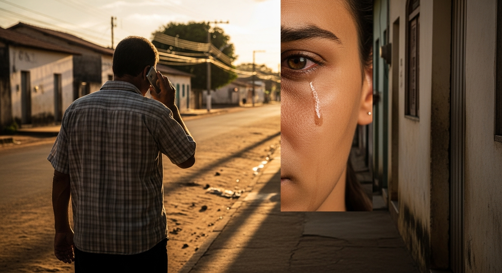
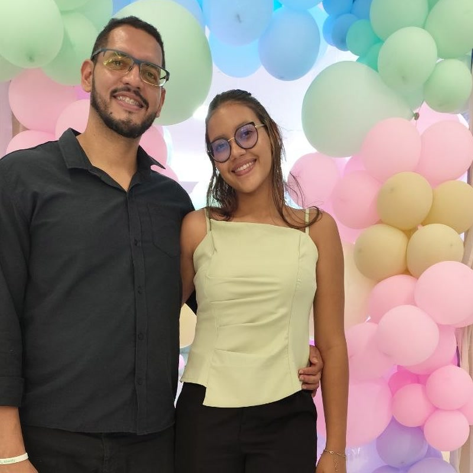

Para Davylla, com amor
Toque para abrir
Antes de voce ter nome... antes de voce ter rosto... eu ja te esperava.
Nao do jeito que a gente espera uma encomenda chegar. Era diferente. Era uma vontade silenciosa, dessas que a gente carrega no peito sem saber explicar pra ninguem.
Eu pensava em como seria... ouvir alguem me chamar de pai pela primeira vez. Ja imaginava as manhas, os domingos, as conversas que a vida ainda ia trazer.
Deus sabia. Eu nao. Mas Ele ja estava costurando voce, fio por fio, num lugar que eu nao podia ver.
E quando voce finalmente chegou... eu entendi que nao era eu que tinha esperado por voce.
Era voce que tinha vindo me ensinar o que e esperar com fe.
Sua mae chegou com aquela noticia de um jeito... que ate hoje me marca.
Ela falou baixinho. Com medo. A gente ainda nao era casado, e ela achou que eu fosse recuar. Que eu fosse fugir. Que ela fosse ouvir de mim alguma coisa que ela nao queria ouvir.
Mas naquele segundo, Davylla... eu nao senti medo. Eu nao senti duvida. Eu senti uma alegria que nao cabia dentro do peito.
Foi uma das melhores noticias que eu ja recebi na vida. Talvez a melhor.
Eu nao sabia ainda quem voce seria. Nao sabia da sua voz, do seu jeito, dos seus sonhos. Mas eu ja sabia uma coisa: voce era um presente. E presente de Deus a gente nao recusa. A gente recebe de joelho.

No dia que voce nasceu... eu nao estava la.
Eu estava em Floriano. Vendendo desinfetante de porta em porta, tentando garantir o pao da casa. O telefone tocou. Era minha mae. Ela disse: "Salatiel, sua filha nasceu."
Eu parei. No meio da rua. Numa calcada qualquer, de uma cidade que nao era a minha.
E chorei.
Chorei de alegria... e chorei tambem de saudade de um rosto que eu nem tinha visto ainda. Como se da pra sentir saudade de alguem que voce nunca olhou nos olhos? Da. Eu sei que da. Porque eu senti.
Foram oito dias ate eu poder te ver. Oito dias contando hora por hora. E quando eu finalmente te peguei no colo... eu entendi que aquela espera tinha valido cada minuto.
Tem uma coisa que eu nunca esqueci. E acho que nunca vou esquecer.
Voce so dormia em cima de mim.
Bercinho nao servia. Cama nao servia. Colo da mae, as vezes, tambem nao. Voce procurava o meu peito, encostava o ouvidinho ali em cima do meu coracao, e dormia. Tranquila. Como se aquele som fosse a coisa mais segura do mundo pra voce.
Eu ficava parado. Sem mexer. Com medo de te acordar. As vezes a perna formigava, as costas doiam, e eu nao saia dali. Porque eu sabia, mesmo sem saber explicar, que aquilo era sagrado.
Hoje, dezenove anos depois, eu te digo uma coisa, filha: meu peito continua aqui. Pra qualquer dia, qualquer hora, qualquer idade.
Voce sempre vai poder voltar.
Hoje voce e mulher.
Eu olho pra voce e vejo coisas que nem voce ainda enxerga direito. Vejo forca. Vejo inteligencia. Vejo sensibilidade. Vejo um potencial que ainda nem comecou a se abrir todo.
Voce e primogenita. Voce abriu o caminho na nossa familia. Tudo o que veio depois de voce, veio passando por onde voce passou primeiro.
Voce e filha amada de Deus. E isso nao e frase bonita pra cartao de aniversario, nao. E verdade que se sustenta sozinha. Antes de ser minha filha, voce e filha Dele. Eu so fui o canal. Ele foi quem te criou.
E voce tem proposito. Tem alguma coisa nesse mundo que so voce pode fazer, do jeito que so voce sabe fazer. Eu nao sei ainda qual e. As vezes voce tambem nao sabe. Mas existe. E o tempo vai mostrar.
Filha, se eu pudesse te dar uma unica coisa pra voce levar pelo resto da vida, nao seria dinheiro. Nao seria conselho de carreira. Nao seria nem essa cartinha aqui.
Seria isso: nunca... nunca... se afaste de Deus.
Voce vai passar por dias bons e por dias dificeis. Vao te elogiar e vao te ferir. Vao te abrir portas e vao te fechar outras. Em todos esses dias, em todos eles, tem um lugar onde voce sempre vai poder voltar pra reencontrar o seu chao: os principios da Palavra.
Nao e religiao. Nao e tradicao. E o jeito que Deus desenhou pra voce viver bem.
E uma coisa eu te prometo: enquanto eu estiver vivo, voce vai ter um pai aqui. Pra ouvir. Pra rezar com voce. Pra te lembrar de quem voce e quando voce esquecer.
Feliz dezenove, Davylla. Voce e a melhor noticia que eu ja recebi na vida.
E continua sendo, todo dia.

Seu pai,
Salatiel